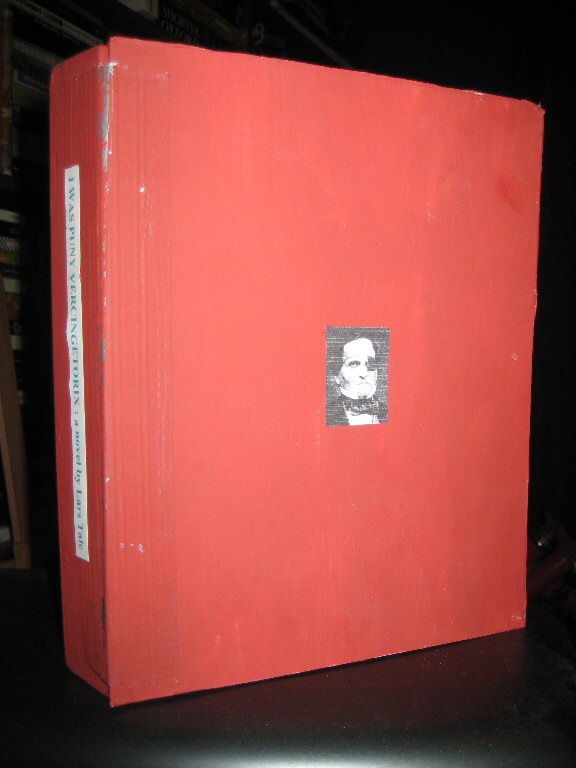

Thursday, March the 28th, 2013
back to: title, date or indexes
Following my dabblings in the world o' art—dabblings which may yet continue—I thought it would be a good idea to repost this, from 2009:
I Was Puny Vercingetorix : a novel by Lars Talc (2003) is not a novel and it is not by Lars Talc. It is not a book at all. It is an objet d'art.
In the words of art critic Cosmo Hoxtonwanker, “it is a bold, transgressive, edgy work, interrogating notions of authenticity, desire, and jouissance while incorporating both dippiness and a Playmobil figure holding a vacuum cleaner under some streamers. If it was for sale, I would pay millions for it.”

It is not for sale.
